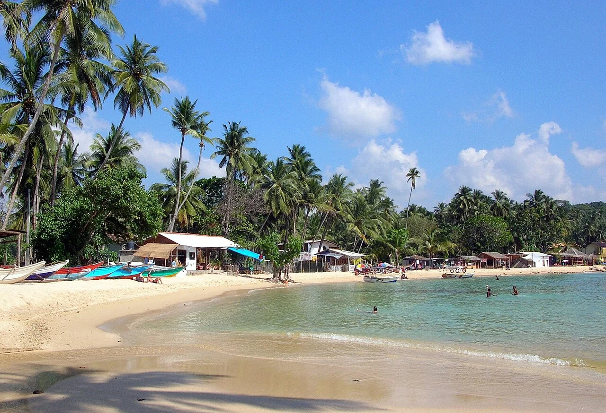

Unawatuna
Province du Sud, Sri Lanka · baignade, snorkeling, plongée

Baie de près d’un kilomètre, à environ 5 km au sud-est de Galle (Wikipédia). Selon le Routard, la plage principale est protégée par un récif et on peut s’y baigner une grande partie de l’année. À 3 km, Jungle Beach est une petite crique entourée de forêt : Wikivoyage la cite comme le meilleur endroit du coin pour le snorkeling. Le Routard mentionne aussi la plongée sur les récifs et sur l’épave du SS Rangoon.
- Lieu
- Province du Sud, Sri Lanka
- Niveau
- Variable selon les conditions
- Activités
- baignade, snorkeling, plongée
- Type d'eau
- Mer / océan
- Coordonnées
- 6.01, 80.24 (position approximative du secteur)
Dangers à connaître
- Comme sur une grande partie de la côte sud, de forts courants peuvent être présents : renseigne-toi sur les conditions avant d’entrer dans l’eau (Routard).
- À Dalawella, plage voisine, ne touche pas les tortues et garde une distance respectueuse (Routard).
- De décembre à avril, c’est la haute saison touristique : la plage est plus fréquentée (Routard).
Le conseil d'Ocean Buddy
Pour le snorkeling, va à Jungle Beach, en bateau, en tuk-tuk ou à pied : la baie y est abritée des vagues et des courants d’Unawatuna (Wikivoyage).
Ouvrir dans Ocean Buddy Télécharger sur l'App Store
Source : Fiche Ocean Buddy · décembre 2026 · d’après le Routard, Wikivoyage et Wikipédia · à vérifier localement.